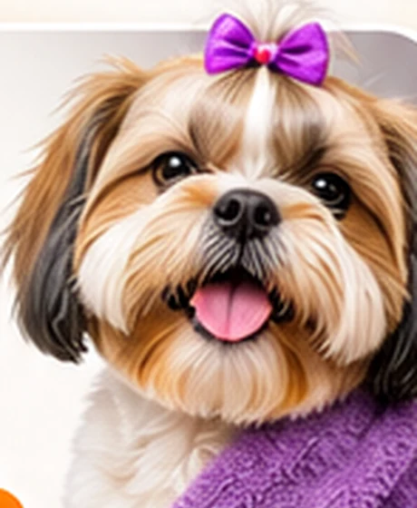
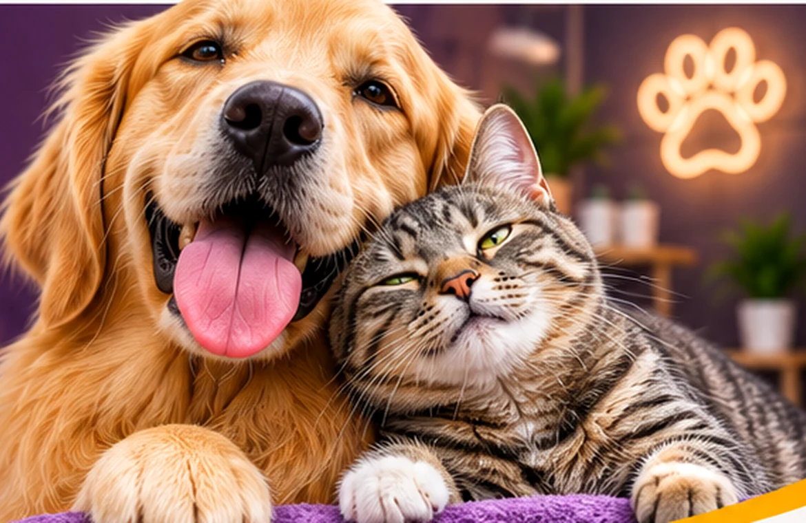
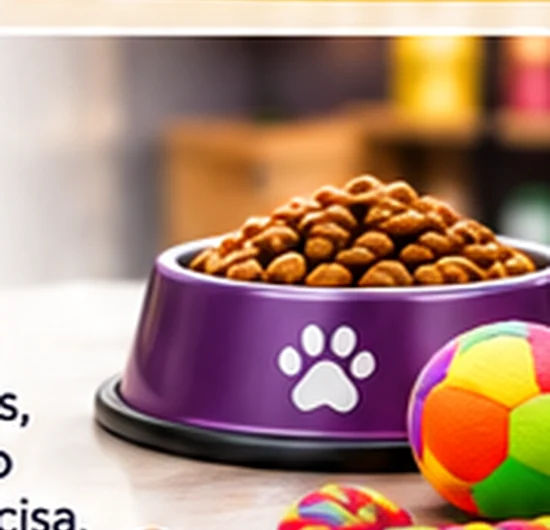
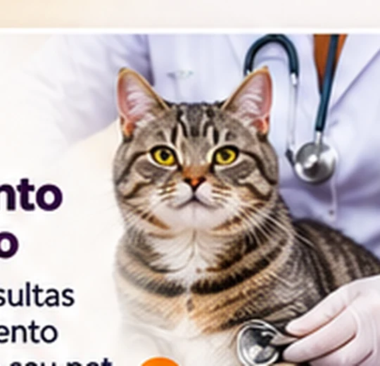
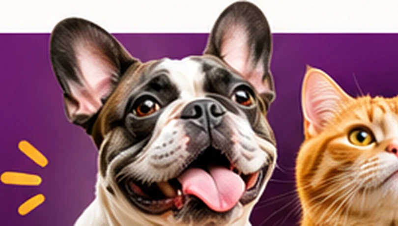

Banho & Tosa
Higiene e beleza com atenção ao conforto e às necessidades do seu pet.
Consultar horáriosBanho e tosa, produtos pet e cuidados veterinários para quem faz parte da família.

Aqui, carinho faz parte do cuidado.Uma experiência mais prática para cuidar da higiene, da saúde e da rotina do seu melhor amigo.

Higiene e beleza com atenção ao conforto e às necessidades do seu pet.
Consultar horários
Rações, acessórios e itens para deixar a rotina do seu companheiro mais completa.
Consultar produtos
Orientação e atendimento clínico para acompanhar a saúde de quem você ama.
Consultar atendimentoUm atendimento pensado para quem sabe que pet é parte da família.
Um olhar atento às necessidades de cada animal.
Bem-estar e conforto como prioridades no atendimento.
Serviços e produtos reunidos para facilitar sua rotina.
Solicite informações e consulte horários rapidamente.

Pet é famíliaNa Soraia Pet Store, em Cascavel, a rotina de cuidados do seu pet fica mais simples. O espaço reúne serviços de banho e tosa, produtos para o dia a dia e atendimento veterinário.
Mais do que um compromisso na agenda, cuidar do seu companheiro é um gesto de amor.
Fale com a equipeConheça as avaliações públicas da Soraia Pet Store e veja a experiência de outros tutores.
Ver avaliações no GoogleBanho, tosa, produtos ou atendimento veterinário.
Informe sobre seu pet e tire suas dúvidas pelo contato comercial.
Confirme disponibilidade, orientações e valores diretamente com o estabelecimento.
Quer saber mais? Nossa equipe pode orientar você sobre os serviços e agendamentos.
Entre em contatoRecomendamos consultar previamente a disponibilidade para o dia desejado e informar o porte e as características do pet.
O estabelecimento trabalha com serviços e produtos para animais de estimação. Consulte a equipe sobre o procedimento específico e a disponibilidade para seu pet.
Envie uma mensagem com o serviço desejado. A equipe poderá informar preços, disponibilidade e orientações.
Rua Maranhão, 1264 — Centro, Cascavel/PR. Você encontra um link para traçar sua rota logo abaixo.
Conte para a gente o que seu companheiro precisa e prepare sua mensagem em poucos segundos.
Preencha os dados e abra sua mensagem no WhatsApp.